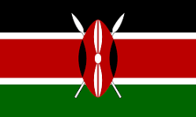

About Me
I'm Henry kinyua also known as Karis as a nickname. I was born and currently living in kenya in eastern Africa region. My hobbies are swimming, hiking, cooking etc. I just finished my high school some few years back and decided to enroll in BYU pathway worldwide program since it offers reliable and affordable courses
Nairobi, Kenya
Official Kenyan Flag
Nairobi is Kenya’s capital city. In addition to its urban core, the city has Nairobi National Park, a large game reserve known for breeding endangered black rhinos and home to giraffes, zebras and lions. Next to it is a well-regarded elephant orphanage operated by the David Sheldrick Wildlife Trust. Nairobi is also often used as a jumping-off point for safari trips elsewhere in Kenya.